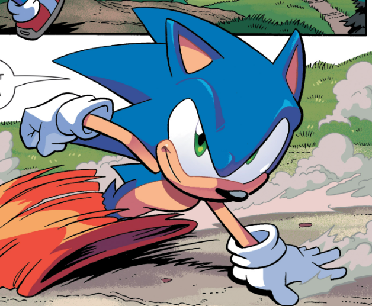
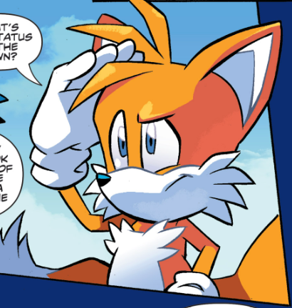
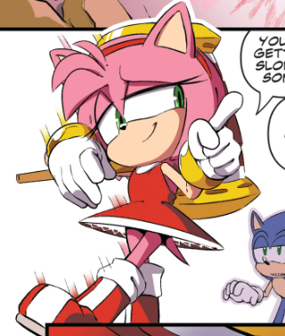
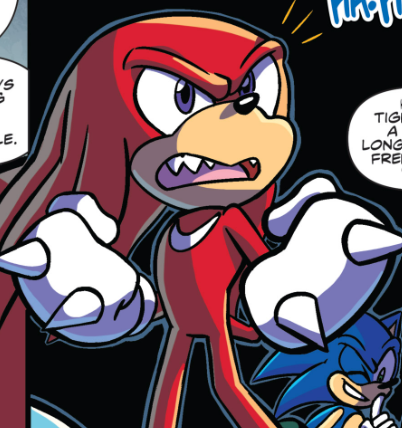
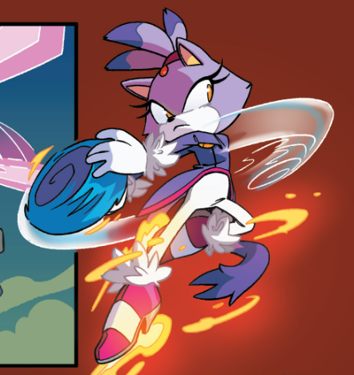
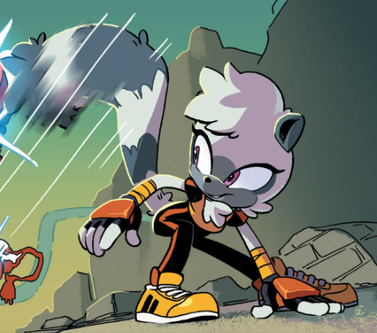
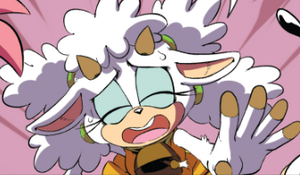
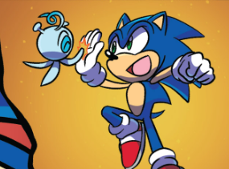

Characters
This page could include brief descriptions of all the characters that show up in the
comic, as well as some statistics pertaining to how often they show up, how many
lines they have, etc.

Sonic the Hedgehog
Sonic
the Hedgehog is the world's fastest hedgehog! He is known for his lightning fast
speed and his snarky attitude, and he is always here to save the day (and his
friends!) from the evil Dr. Eggman!
Total appearences: 257 panels
Sonic's arrogance is one of his defining characteristics, and the numbers certainly
show it! He shows up in over 70% of the 356 total panels encoded, and using the
XPath command //cbml:panel/note[contains(.,'pose')]
reveals that Sonic takes time out of his day to pose flashily multiple times per
issue.

Miles "Tails"
Prower
Miles "Tails" Prower is a young two-tailed fox who is Sonic's
best friend. He was once bullied for having two tails, but despite his troubled
past, he is a highly intelligent inventor and can even use his two tails to fly! He
even has his own airplane known as the Tornado!
Total appearences: 42
panels
Tails is one of gaming's most well-known sidekicks, a distinction
further supported by IDW's comics. Using the XPath command //cbml:panel/@characters[contains(.,'#tails')][contains(.,'#sonic')], we
can see that of Tails' 42 appearences, 33 of them are alongside his buddy Sonic.
That's almost an 80% rate, nice consistency Miles!

Amy Rose
Amy Rose is a
pink hedgehog who is deeply in love with Sonic the Hedgehog. She is known for her
joyful spirit and her trusty Piko Piko Hammer. She is also known for her
fortune-telling skills that help predict her future.
Total appearences: 58
panels
Amy has been characterized by her connection to Sonic for a long time,
but that's recently been changing! She's one of the resistance's highest-ranking
members, and in her debut issue, she actually has more lines than Sonic himself!
Using //cbml:panel/cbml:balloon[@who="#sonic"] and //cbml:panel/cbml:balloon[@who="#amy"], we can see that
while Sonic has 41 lines, Amy has 44!

Knuckles the
Echidna
Knuckles the Echidna is a red echidna who is the last living
member of the Echidna tribe. He is known for his powerful fighting skills and can
break through anything with his spiked knuckles, which is how he earned his name.
Knuckles is also known for guarding the Master Emerald, a massive and powerful jewel
that keeps his home, Angel Island, afloat.
Total appearences: 50 panels
At one time, Knuckles was one of Sonic's toughest rivals, and while they've patched
up their differences, the rivalry, in some small part, remains alive. Using //cbml:panel/@characters[contains(.,'knuckles')] and //cbml:panel/@characters[contains(.,'sonic')], we can see
that Knuckles is tailing behind Sonic by only 3 appearences, his 50 to Sonic's 53. I
guess even after all these years, it's still Sonic, & Knuckles...

Blaze the Cat
Blaze the
Cat is a princess cat from the Sol Dimension. As her name implies, Blaze is known
for her fiery attacks that burn everything in their paths. She is also the guardian
of the Sol Emeralds, seven jewels that bring immense power to the Sol
Dimension.
Total appearences: 39 panels
Blaze is a strong, stoic
character, by using //cbml:panel/cbml:balloon[@who='#blaze'] we can see that she only has 15
lines. Using the robust XPath command //cbml:panel/cbml:balloon[@who='#blaze'] ! normalize-space() ! string-length()
=> sum() div //cbml:panel/cbml:balloon[@who='#blaze']=>count() we can see
that her average line length is about 49 characters, as compared to something like
Amy's average line length of 57 characters in her debut issue.

Tangle the Lemur
Tangle
the Lemur is a young civilian who is one of Sonic's newest friends. She met Sonic
while she was protecting her town from an invasion of Dr. Eggman's Egg Pawn robots,
and they have become great teammates. Tangle is an excitable, optimistic, and
somewhat reckless fighter, though her extendable tail helps her get out of jams her
careless fighting style gets her into.
Total appearences: 56 panels
The
XPath command //cbml:panel/cbml:balloon[@who='#tangle']
reveals that Tangle has 27 lines in her debut, almost even with Sonic's 30. She's a
pretty talkative lemur!

Lanolin the Sheep
Lanolin
the Sheep is another new friend of Sonic's. She first met Sonic when she was
defending her hometown, Riverside, from Badniks. After Sonic helped Lanolin save her
town, she became a member of the Restoration to ensure nobody's home would face the
same demolition her's did.
Total appearences: 5
The bravest warriors
come from the most humble of beginnings. Lanolin began as a simple background
character, but thanks in part to her creator, Adam Bryce Thomas, who would continue
to include her in issues he illustrated, she would rise to become a principal
character.

Rough & Tumble the
Skunks
Rough and Tumble are a pair of skunks who love nothing more than
doing nothing, which is why they enslave an entire village and force its residents
to serve their every want and need. They might come across as brutish pushovers, but
don't knock this duo! They string along Sonic and Knuckles for an impressive 7
pages. When Knuckles and Sonic beat up the brutes, they discover a new
passion...REVENGE!
Total Appearences: 28(Rough)/27(Tumble)
As
they're complementary naming scheme and choreagraphed intro cutscene suggest, these
two are practically inseparable. The XPath command //cbml:panel/@characters[contains(.,'tumble')][contains(.,'rough')]
shows us that of the pair's ≈28 appearences, 21 of them are made side by side.

Yacker
Yacker is a member
of an alien species known as Wisps. Wisps are aliens from Planet Wisp that come in a
variety of colors that bring special powers to Sonic depending on the color of the
Wisp. Yacker acted as a guide for Sonic and Tails (and the player) in Sonic
Colors.
Total appearences: 1

Dr. Eggman
Dr. Eggman is
an evil scientist who is Sonic the Hedgehog's archenemy. Not only is his IQ over 300,
Dr. Eggman is known to engineer a vast arsenal of ruthless robots who try and take
down our speedy hero. He was originally known as Dr. Robotnik, but has been called
Dr. Eggman by Sonic to make fun of him. Eggman has become so used to being called
"Eggman" that he refers himself as that name since.
Total appearences: 3
Eggman has been solidly defeated, but his influence is still felt by all. Using the XPath command //cbml:panel/cbml:balloon[matches(.,'[Ee]ggman')], we can see that despite only appearing physically in 3 panels, in the first 4 issues, he's mentioned by Sonic and friends 15 times!

Orbot & Cubot
Orbot
and Cubot are a pair of bumbling robots who are Dr. Eggman's henchmen. They usually
help Dr. Eggman with his sinister plans, but they often goof up and do not do what
Dr. Eggman programmed them to do.
Total appearences: 2
Using //cbml:panel/@characters[contains(.,'orbot')][contains(.,'cubot')]
we can see that these goof-offs stay true to their reputation. Rather than working hard
to help (apparently) Eggman, they're slacking off, only showing up in two panels in the
first 4 issues!